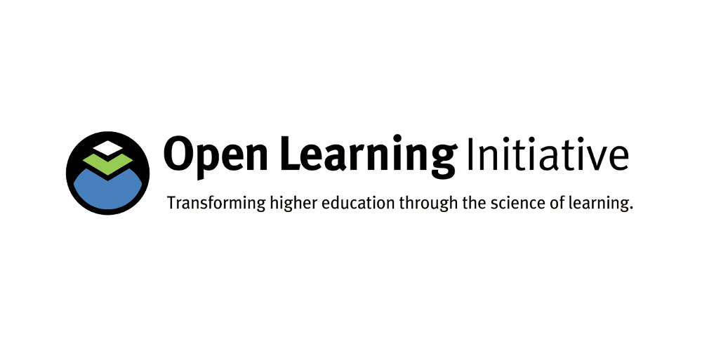
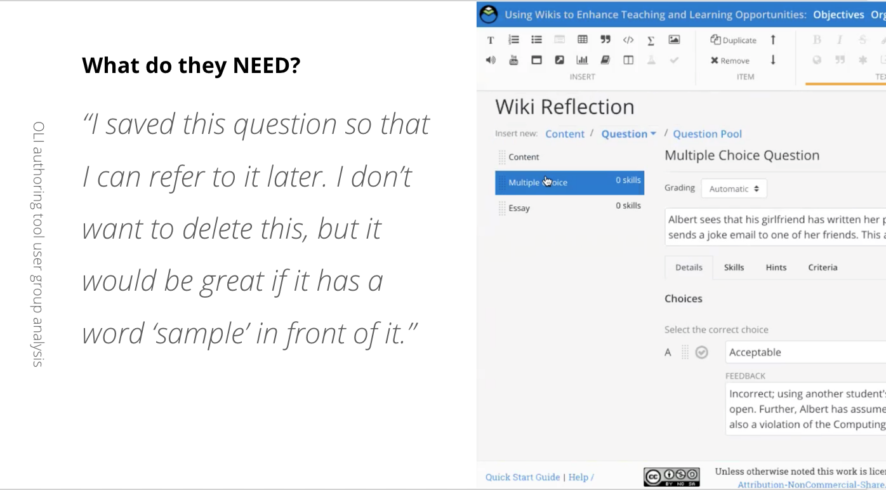

About
Work
Fun
#user research #UI design #productivity tool
Open Learning Initiative
Open Learning Initiative is an open source web application that lets faculties create, share and analyze their courses. As a UX designer, I conduct user research, develop UX/UI design for educational authoring tool.
This is an ongoing project.
Learn more
About the project
Duration: ongoing
Team size: 10~
Reaches:

I was the only designer in the development team, which gave me an opportunity to get to know the developers' work process (and jokes).

My responsibility included user interviews, user research and presenting the insight and solutions to the team, UI design and pitches.
back to the top